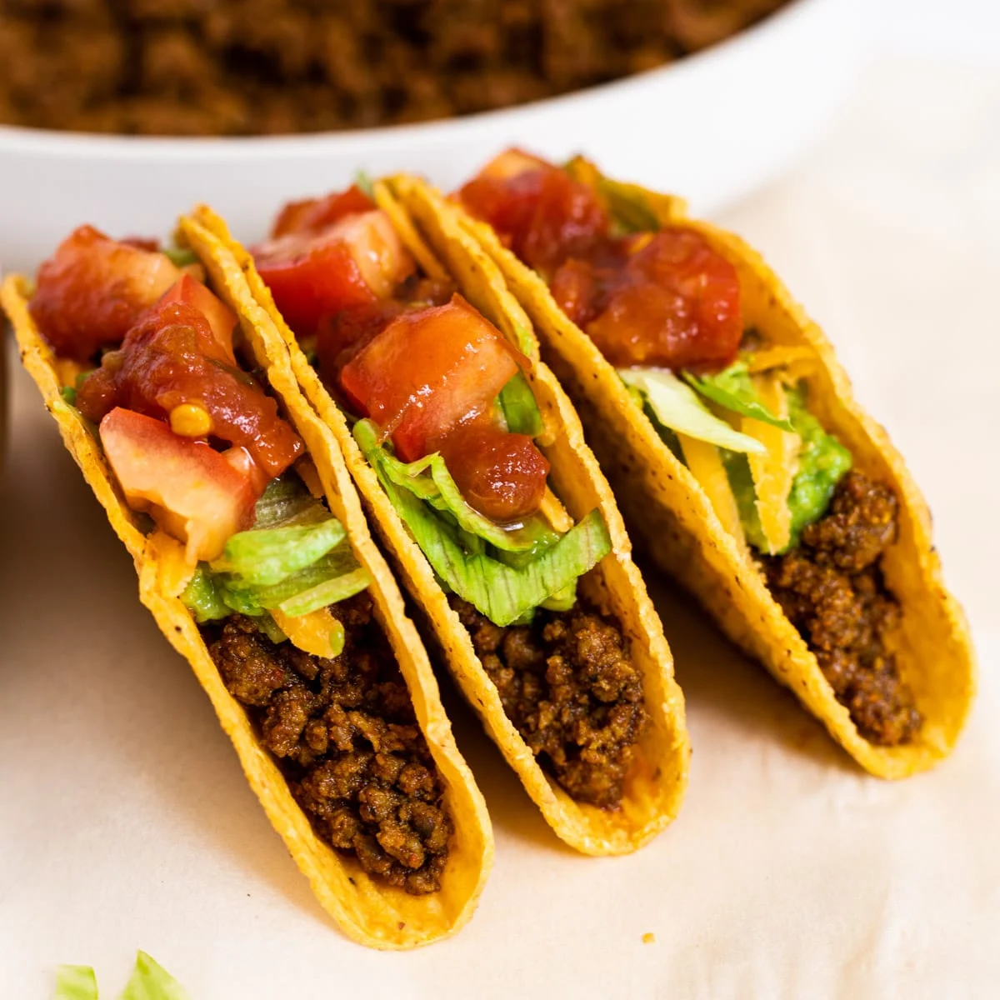

Beef Tacos

Description
Delicious beef tacos! Set out the sliced beef, the toppings and the tortillas for everyone to custom build their own tacos.
Ingredients
- 2 boneless beef chuck shoulder steaks, cut 3/4 inch thick
- 12 small flour tortillas, warmed
- ⅔ cup prepared Italian dressing
- 1 tablespoon chili powder
- Thinly sliced lettuce, chopped tomato, dairy sour cream, guacamole (optional)
Steps
- Combine marinade ingredients in small bowl. Place beef steaks and marinade in food-safe plastic bag; turn to coat. Close bag securely and marinate in refrigerator 6 hours or as long as overnight, turning occasionally.
- Preheat barbecue grill. Remove steaks from marinade; discard marinade. Place steaks on grid over medium, ash-covered coals. Grill, uncovered, 14 to 17 minutes for medium rare to medium doneness, turning occasionally.
- Carve into thin slices; season with salt. Serve in tortillas with toppings.